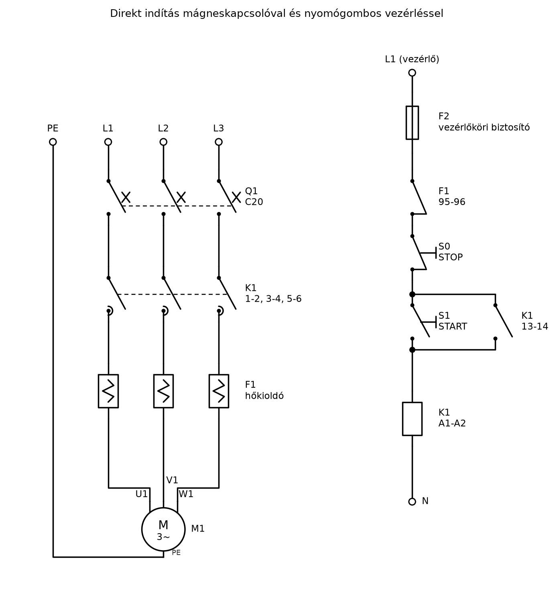
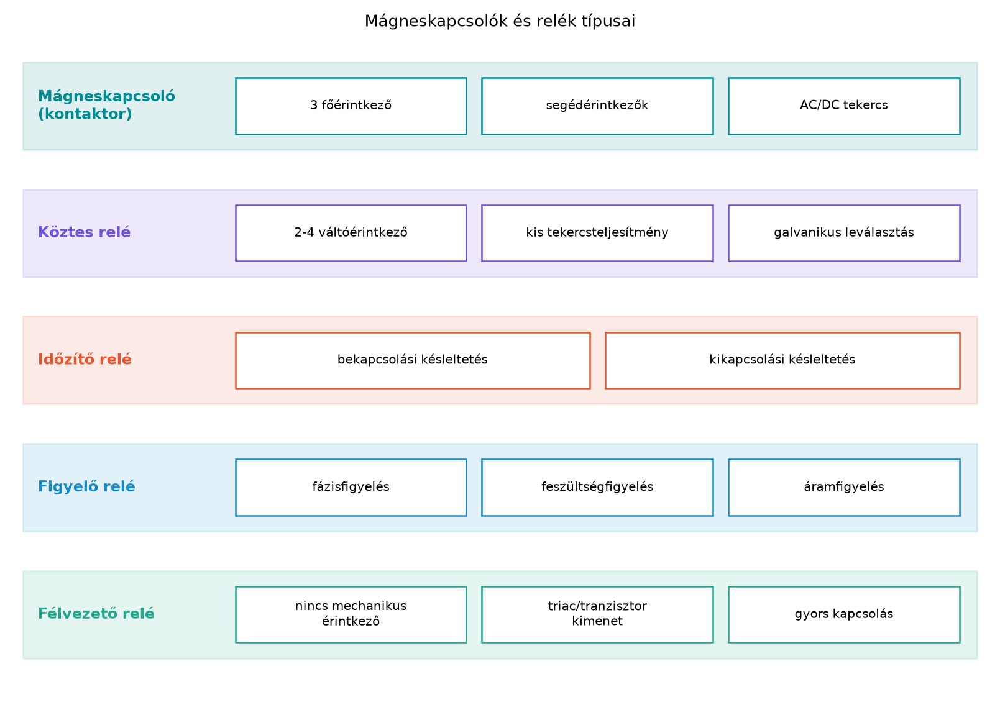

Egy ipari csarnokban a szivattyúmotort nem közvetlenül a kézi kapcsolóval akarjuk indítani, hanem egy vezérlőpanelről, akár több helyről, akár PLC-ből. Ha a motort egyszerűen egy kézi motorvédő kapcsolóval kapcsolnánk, akkor a kezelőnek mindig a motornál kellene állnia, és a vezérlési feladatot nem tudnánk automatizálni. A mágneskapcsoló (kontaktor) erre a feladatra való: viszonylag kis teljesítményű vezérlőjel hatására, elektromágneses úton, nagy teljesítményű főáramkört zár vagy bont. Ezt a gondolatot a Kapcsolók és mágneskapcsolók rajzjelei, kapocsjelölések alfejezetben már előkészítettük a kapocsjelekkel, itt most a tényleges készüléket, annak bekötését és a relék családját tanuljuk meg. A mágneskapcsoló kiválasztása és előkészítése napi feladat a villamos berendezés- és készülékszerelőnek, ezért a hangsúly a gyakorlati bekötésen és a hibák elkerülésén van.
Definíció. A mágneskapcsoló (elektromágneses kontaktor) olyan kapcsolókészülék, amelyben a kapcsolóérintkezők mozgatását elektromágneses tekercs által létrehozott mágneses erő végzi; a tekercs feszültségmentes állapotában a visszatérítő rugó vagy gravitáció nyitja a főérintkezőket.
A mágneskapcsoló fő részei:
Amikor a tekercsre rákapcsoljuk a névleges vezérlőfeszültséget (például , ), áram indul, a vasmag mágnessé válik, és a mozgó részt az álló részhez húzza. A mozgó érintkezőhíd hozzászorul az álló érintkezőkhöz, így a főérintkezők zárnak. A segédérintkezők állapota ezzel egyidejűleg megváltozik: a 13–14 zár, a 21–22 bont.
Összefüggés. A mágneskapcsoló vezérlő áramköre és a főáramköre galvanikusan el van választva; a tekercs és az érintkezők között nincs közvetlen fémes kapcsolat. Ezért egy kisfeszültségű, jól szigetelt vezérlőjel (például PLC tranzisztoros kimenete) képes egy nagy motor áramkörét kapcsolni.
A mágneskapcsoló tekercsét a gyártó meghatározott feszültségre készíti. Gyakori értékek:
Megjegyzés. A tekercsre nem szabad a névlegesnél lényegesen nagyobb feszültséget kapcsolni, de a túl alacsony feszültség is hibás működést okoz: a vasmag nem húz be rendesen, a mágneskapcsoló zümmög, a főérintkezők nem szorulnak össze eléggé, és a túlmelegedés vagy érintkező-összeégés veszélye áll fenn.
Szabály. A mágneskapcsoló bekötésekor mindig a gyártói adatlap és a készülék kapocstáblája a mérvadó; a kapocsjelöléseket az MSZ EN 60617 és az MSZ EN 60947 szerint kell azonosítani. A gyakorlatban:
Tipikus hiba. A szerelő a NO és NC érintkezőket felcseréli, mert a rajzon a kapcsolási állapot feszültségmentes, kikapcsolt helyzetre vonatkozik. A bekötés előtt ezért meg kell mérni multiméterrel (folytonosságvizsgálat): NO érintkezőnél a tekercs feszültségmentes állapotában szakadás, NC érintkezőnél zárlat mérhető a kapocspár között.
A következő kapcsolási rajz egy gyakori direkt indítást mutat: a Q1 megszakító védi a főáramkört, a K1 mágneskapcsoló kapcsolja a motort, a vezérlőáramkörben az F2 vezérlőköri biztosító, az S0 STOP (NC), S1 START (NO) nyomógomb, az F1 hőkioldó bontó érintkezője (95–96), a K1 tekercs és a K1 13–14 önfenntartó segédérintkező van.

A rajz bal oldala a főáramkör: a három fázis külön-külön fut a Q1, a K1 főérintkezői és az F1 hőkioldó hőelemein át a motor U1, V1, W1 kapcsáig, a motortest a PE-re csatlakozik. A jobb oldal a vezérlőáramkör (L1–N): F1 95–96 → S0 STOP → S1 START, vele párhuzamosan a K1 13–14 → K1 tekercs. Ügyeljünk arra, hogy a tekercs A1 és A2 kapcsa a rajz szerint a start gomb után, az N vezetőhöz pedig az A2 kapocs csatlakozik. A gyakorlatban az A1-re szoktuk kötni a vezérlő fázist, az A2-re a nullát.
A mágneskapcsoló mellett a vezérlőáramkörökben gyakran találkozunk kisebb kapcsolási teljesítményű, de speciális feladatú relékkel. A relé általános értelemben olyan készülék, amely egy bemeneti fizikai mennyiség (áram, feszültség, hőmérséklet, idő, fény) hatására egy vagy több kimeneti érintkezőt kapcsol. A mágneskapcsoló is egy relé, de a szakmai nyelvben a relé kifejezést a kisebb teljesítményű, jellemzően segédérintkezős készülékekre, a mágneskapcsoló kifejezést a motorok és nagyobb terhelések kapcsolására szolgáló kontaktorra használjuk.
Definíció. A köztes relé olyan elektromechanikus relé, amelynek tekercsét egy vezérlőjel (például PLC kimenet, érzékelő kimenet) működteti, és a relé érintkezői nagyobb feszültségű vagy több terhelést kapcsolnak; így elektromos leválasztást és jelismétlő (szeparáló) funkciót valósít meg.
Definíció. Az időzítő relé olyan vezérlőkészülék, amely a működtető jel megjelenése után meghatározott késleltetéssel kapcsolja az érintkezőit, vagy a jel megszűnése után még egy ideig fenntartja azokat. A késleltetés lehet bekapcsolási vagy kikapcsolási típusú.
Definíció. A figyelő relé (monitoring relé) valamely villamos jellemző – fázissorrend, fáziskimaradás, túlfeszültség, alulfeszültség, aszimmetria, túlterhelés, szigetelési ellenállás – figyelésére szolgál, és a beállított határ túllépésekor bontó vagy záró érintkezőjével vezérlést ad (például leállítja a motort).
Definíció. A félvezető relé (solid-state relay, SSR) mozgó alkatrész nélküli relé, amelyben a bemeneti oldalt optocsatolóval választják le a kimeneti félvezető kapcsolótól (triac, tirisztor, MOSFET). Előnye a nagy kapcsolási ciklusszám, a hangtalan működés és a gyors kapcsolás; hátránya, hogy kikapcsolt állapotban is folyik a kimeneten kis szivárgóáram, és a félvezető nem képez légrést, ezért az SSR kikapcsolt állapota nem leválasztás: a terhelés kapcsain feszültség mérhető, feszültségmentesítésre (szakaszolásra) nem használható; a vezetési veszteség miatt a melegedésére (hűtőborda) is figyelni kell.
Az alábbi ábra a relék családját foglalja össze.

A váltakozó áramú tekercsű mágneskapcsolók a hálózati frekvencia (50 Hz) kétszeresével, azaz 100 Hz-cel rezegnek; ennek hallható jele a mély zümmögés. Egészséges, helyesen működő készüléknél ez halk; a hangos zümmögés hibára utal.
A túlzott zümmögés okai és kezelése:
A zümmögő mágneskapcsolót nem szabad figyelmen kívül hagyni, mert a rossz záródás miatt a főérintkezők melegek lesznek, és a készülék rövid időn belül tönkremegy.
A másik fontos üzemzavar a kikapcsolási túlfeszültség. A mágneskapcsoló tekercse jelentős induktivitást képvisel. Amikor a vezérlőáramkört bontjuk, az értelmében az áram hirtelen megszakadása nagy, a vezérlő feszültség többszörösét is elérő feszültségcsúcsot hozhat létre. Ez a csúcs:
A védekezés módja:
Figyelem. A dióda vagy RC-tag soha nem helyettesíti a mágneskapcsoló alapvető védelmét, hanem kiegészítő, megbízhatóságot növelő elem. Bekötésekor ellenőrizni kell a polaritást (dióda) és a megengedett feszültséget.
Szabály. A motorhoz való mágneskapcsoló kiválasztásánál az alábbi lépéseket követjük:
Példa 1. Egy háromfázisú, 400 V-os, 7,5 kW-os aszinkron motor névleges árama kb. 15 A, teljesítménytényezője , hatásfoka . Válasszunk mágneskapcsolót AC-3 kategóriában, ha a rendelkezésre álló vezérlőfeszültség 230 V AC.
Megoldás. A motor áramát a háromfázisú
teljesítményképletből is ellenőrizhetjük:
átrendezve:
A katalógusban a 7,5 kW-os AC-3, 400 V érték jellemzően a 17–18 A-es
készüléknél szerepel (ellenőrizendő: gyártói katalógus); ez teljesíti az
feltételt
(),
ezért válasszunk ilyen kontaktort, 230 V AC tekercsfeszültséggel, egy NO
segédérintkezővel az önfenntartáshoz. A kiválasztást mindig a gyártói
adatlap alapján kell véglegesíteni. (ellenőrizendő: konkrét
gyártói katalógus értékei)
Példa 2. Határozzuk meg, hogy egy köztes relé, amelynek 230 V AC, 5 A névleges áramú záró érintkezője van, közvetlenül kapcsolhat-e egy 0,75 kW-os, 400 V-os háromfázisú motort.
Megoldás. A motor névleges árama:
ahol
és
becsült érték. Az indítási áramcsúcs jellemzően 5–8-szorosa a névleges
áramnak, azaz legalább
,
ami már meghaladja az 5 A-es érintkező kapcsolási képességét. Ezért a
köztes relé közvetlenül nem kapcsolhatja a motort; a
motor indítására mágneskapcsolót kell használni, a relé legfeljebb a
mágneskapcsoló tekercsét kapcsolhatja. ∎
Szabvány. A mágneskapcsolókra és motorindítókra az MSZ EN 60947-4-1 (kisfeszültségű kapcsoló- és vezérlőkészülékek; elektromechanikus mágneskapcsolók és motorindítók), a kapocsjelölésekre az MSZ EN 60617 és az MSZ EN 60947-1 vonatkozik. A relékre az MSZ EN 61810 sorozat ad követelményeket. Az ívkezelésre és a használati kategóriákra a Kapcsolókészülékek működése, ívoltás és használati kategóriák alfejezetben láttuk a szabványos keretet. A pontos értékek, táblázatok és osztályok a mindenkor hatályos szabványkiadásból, illetve a gyártói adatlapból veendők. (ellenőrizendő: aktuális szabványkiadások, gyártói adatok)
Egy üzemben egy szivattyúmotor mágneskapcsolója hangosan zümmögött, és a motor időnként leállt. A karbantartó először a motort gyanúsította, de a mérések szerint a motor üresjáratban megfelelően működött. A hibakeresés során kiderült, hogy a mágneskapcsoló vasmagjának pólusfelületére fémreszelék és por rakódott, az árnyékoló menet pedig kilazult. A szennyeződés növelte a légrést, a zümmögés erősödött, és az érintkezők sem szorultak össze teljesen, ami túlmelegedést okozott. A vasmag megtisztítása, az árnyékoló menet rögzítése és a csatlakozók utánhúzása után a zümmögés megszűnt, a hőkamerás ellenőrzés is normális hőmérsékletet mutatott. Ebből tanuljuk: a zümmögést soha nem szabad „normálisnak” tekinteni.
Biztonsági korlát. A fenti eset hálózati feszültségű készüléknél történt; az ilyen munkát csak jogosult személy végezheti, a feszültségmentesítés öt szabályának betartásával.
Biztonsági korlát. A feladat tanműhelyi (törpefeszültségű) környezetre vagy jogosult oktató felügyeletére vonatkozik; hálózati feszültségen önállóan ne végezd.
Mágneskapcsoló bekötése lépésről lépésre
Ellenőrzési pont. A tekercs bekapcsolásakor a mágneskapcsolónak határozottan be kell húznia; a zümmögés halk, a főérintkezők nem melegszenek túl. A kikapcsoláskor az érintkezőknek azonnal, szikrázás nélkül kell nyitniuk.
1. feladat (A) Rajzold le a mágneskapcsoló jelképét a tekercs, egy NO és egy NC segédérintkező, valamint a három főérintkező feltüntetésével! Használd a szabványos kapocsjeleket.
2. feladat (A) Egy mágneskapcsoló tekercse 230 V AC, 50 Hz. A tekercs ellenállása üzemi hőmérsékleten 400 Ω, induktivitása 8 H. Becsüld meg a tekercs váltakozó áramú ellenállását (impedanciáját) és a felvett látszólagos teljesítményt!
3. feladat (B) Egy 5,5 kW-os, 400 V-os, háromfázisú motor névleges árama 12 A, indítási áramcsúcsa 84 A. Válassz mágneskapcsolót AC-3 kategóriából, ha a vezérlőfeszültség 230 V AC, és legalább két NO segédérintkezőre van szükség. Indokold a választást!
4. feladat (B) Egy DC 24 V-os mágneskapcsoló tekercset PLC tranzisztoros kimenete kapcsol. Rajzold be a kapcsolási rajzra a szükséges kikapcsolási túlfeszültség elleni védelmet, és magyarázd el a működését!
5. feladat (C) Egy időzítő relé bekapcsolási késleltetése 5 s. A relé tekercsét 230 V AC feszültségre kapcsolva mennyi idő után zár a NO érintkezője? Mi történik, ha a tápellátást a 3. másodpercben megszakítjuk?
6. feladat (D – hibakeresés) Egy motor indításakor a mágneskapcsoló behúz, de a start gomb elengedésekor azonnal elenged. A stop gomb, a hőkioldó és a vezérlő feszültség rendben van. Mi a hiba oka, és hogyan javítod?
1. feladat – megoldás. A kapcsolási rajzon a tekercs A1–A2 jelöléssel, a főérintkezők 1–2, 3–4, 5–6, a NO segédérintkező 13–14, a NC 21–22 jelöléssel szerepel. A rajz az MSZ EN 60617 szerinti jelképeket használja: a tekercs téglalap, az érintkezők kapcsolójelek.
2. feladat – megoldás.
Adott:
,
,
.
Keresett:
,
.
Képlet:
,
,
.
Behelyettesítés:
Ellenőrzés: a tekercs induktív jellegű, a látszólagos (tartási)
teljesítmény néhány tíz VA nagyságrendű, ami megfelel a gyakorlati
mágneskapcsoló tekercsek tartási teljesítményének; a behúzás
pillanatában, nyitott légrésnél a tekercs ennél jóval többet vesz fel,
ezért a vezérlőtranszformátort a behúzási teljesítményre is méretezni
kell. ∎
3. feladat – megoldás. A motor AC-3 kategóriához tartozik. A névleges áram 12 A, az indítási áram 84 A. A mágneskapcsoló főérintkezőinek AC-3 terhelhetősége a katalógus szerint legalább 12 A legyen; a katalógus AC-3, 400 V oszlopa szerint az 5,5 kW-os motorhoz a 12 A-es AC-3 (5,5 kW) készülék a minimum, mert és a teljesítménye is belefér; 16 A-es készüléket akkor választunk, ha tartalékot akarunk (gyakori kapcsolás, nehéz indítás, magas környezeti hőmérséklet). A továbbiakban a minimumot, a 12 A-es AC-3 készüléket vesszük alapul. A vezérlőfeszültség 230 V AC, ezért 230 V AC tekercsű készüléket rendelünk. Két NO segédérintkező szükséges; ha a mágneskapcsolón csak egy NO van, akkor egy segédérintkező-blokkot kell felszerelni. A választás tehát: mágneskapcsoló, 3 pólus, AC-3, (tartalékkal 16 A), 230 V AC tekercs, plusz 1 NO segédérintkező. (ellenőrizendő: gyártói katalógus szerinti pontos típus)
4. feladat – megoldás. A kapcsolási rajzon a PLC kimeneti tranzisztora és a mágneskapcsoló tekercse közé egy diódát kötünk párhuzamosan a tekercssel, fordított polaritással (a katód a tápfeszültség pozitív oldalára, az anód a tekercs másik kapcsára). Így a tranzisztor kikapcsolásakor a tekercsben folyó áram a diódán keresztül záródik, és a feszültségcsúcs nem emelkedik a tápfeszültség + diódanyitófeszültség fölé. Ezzel védjük a tranzisztort és csökkentjük a szikrázást. A diódát a tekercs közvetlen közelébe kell szerelni, és ellenőrizni kell a polaritást.
5. feladat – megoldás. Bekapcsolási késleltetésű időzítő relénél a tápfeszültség megjelenése után az érintkezők 5 s elteltével kapcsolnak. Ha a tápellátást a 3. másodpercben megszakítjuk, a késleltetés megszakad, és a NO érintkező nem zár, mert az időzítő nem fejezte be a ciklust. A gyakorlatban az időzítő relé tápfeszültség-megszakítása újraindítja a késleltetést.
6. feladat – megoldás. A hiba oka: az önfenntartó ág hiányzik vagy rossz érintkezővel van bekötve. A start gomb elengedésekor a tekercs áramköre megszakad, ezért a mágneskapcsoló elenged. A helyes bekötés: a start nyomógombbal párhuzamosan be kell kötni a mágneskapcsoló 13–14 záródó segédérintkezőjét úgy, hogy amikor a tekercs behúz, a 13–14 zár, és a start gomb felengedése után is fenntartja a tekercs áramkörét. Először multiméterrel ellenőrizzük, hogy a 13–14 valóban NO, és a vezérlőáramkörben a starttal párhuzamosan van kötve. Ha szükséges, javítjuk a bekötést, majd újra elvégezzük a próbát.
A mágneskapcsoló elektromágneses működtetésű kapcsolókészülék, amelynek tekercsére (A1–A2) kis teljesítményű vezérlőjelet kapcsolva nagyobb teljesítményű főáramkört zár vagy bont. A főérintkezők jelölése 1–2, 3–4, 5–6, a záródó segédérintkezőké 13–14, a bontóké 21–22. A tekercs gyakori feszültségei: 24 V AC/DC, 230 V AC, 400 V AC. A kiválasztásnál a motor használati kategóriáját (AC-3) és névleges áramát, a vezérlőfeszültséget és a szükséges segédérintkezők számát kell figyelembe venni. A relék családjába tartozik a köztes, időzítő, figyelő és félvezető relé. A kikapcsolási túlfeszültség ellen DC tekercsnél diódát, AC tekercsnél RC-tagot vagy varisztort kell beépíteni. A zümmögés mindig hibát jelez. Továbbvitt eredmény. A mágneskapcsoló felépítését, kapocsjelöléseit és kiválasztását a Motorvédő kapcsoló, hőkioldó, megszakító és szakaszoló alfejezetben használjuk tovább a teljes motorvédelmi és kapcsolási lánc kialakításához.